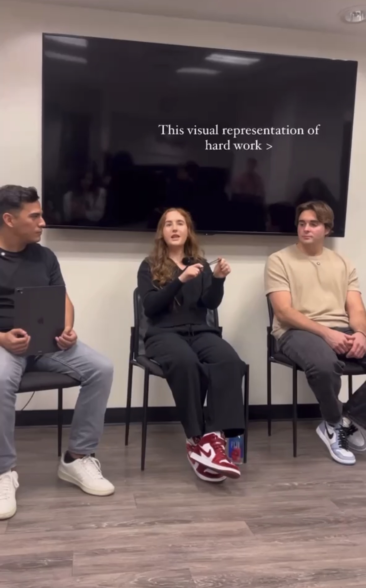

Lessons From Three Entrepreneurs in Their Early-Mid 20s
On January 28th, 2025, I had the chance to attend an entrepreneurship panel at my school, the University of Southern California, which featured three young and successful Founders who gave their advice for breaking into entrepreneurship, particularly in the social media age.
The three founders were Jacob Pace, 26; Sam Freeman, 23; and Jenna Gestetner, 22.
While the talk was almost a year ago, I vividly remember the energy and enthusiasm that all three founders had, which was extremely infectious, and I'm connected to all three to this day in some capacity.
While the vast majority of my days being grad student were spend on relatively boring technical research, the real value I saw out of USC (beyond a base technical foundation) was the opportunity to meet successful entreprenurs, creators, and people like this.
I was actually a bit late and missed about half of the talk, but I still learned a lot from the last part and from the Q&A after.
Without further ado, let's get to the takeaways from my notes!
Leverage is EVERYTHING - Jacob Pace
Without even looking at my notes, by far the biggest takeaway I got from this talk which I've thought about everyday since is something that Jacob Pace told me after which was about leverage.
He mentioned that leverage is EVERYTHING - whether it's with respect to business, schooling/education, getting jobs, or even in things like dating.
The main reason you want to build leverage, in his opinino, is because he thinks you shouldn't trust most people too much.
Because he thinks, in careers and in business, there's ALWAYS going to be people who try to take advantage of you.
Jacob Pace thinks that the way you can defend yourself against people who do try to take advantage of you (and instead be around those who are fair or who you actually want to be around) is to build more leverage for yourself.
Because at the end of the day, you're the only person who's going to look out for you. Always find as many ways as possible to build leverage.
And he also mentioned how the best relationships are ALWAYS going to be the ones where you both respect each other and see mutual value in each other.
From this point forward, this completely transformed my mental model for how I view all of these situations and life in general - leverage is king, that's for sure.
As a quick example, there's a YouTuber - who I haven't met - called Derek Munro, whose content I started watching shortly after this talk and he gave a ton of great examples of leverage in different contexts throughout his life which only further validated this in my head.
I've thought of my career, content, and almost everything in terms of leverage and the other lessons that Jacob taught here - which will be invaluable to me going forward.
Jacob - if you're reading this, thank you! This piece of advice has DEFINITELY transformed my thinking over the past year and will continue to do so going forward.
How To Get Your First Experience
Sam - Prioritize learning at first over making money, but create some sort of incentive structure where you can make money as you learn, through the value you're providing to that project.
Jenna - you should have the mindset that you provide value JUST by being yourself, let alone the fact that you have your skills, experience, and knowledge on top of that. Even if you have none of those, you provide value just by being yourself and by bringing a new and fresh perspective.
Sam - Take Advantage of the Fact That You (We) All Go To USC!
Sam also mentioned that we all go to USC - which is a really good school - and that we should be able to market outselves and that people will believe that we have value just because of that.
What is one thing you with you knew before you started your career in the creator economy?
Jenna - instead of focusing on what you're necessarily JUST good at, know that people will relate withg and follow you because of your struggles or your bad traits or your flaws. Put things that you're more uncomfortable sharing on camera and more people will likely engage with you.
People relate to FLAWS way more than the good parts of you.
If you only show the good parts, people won't engage with your content.
Sam - If you only remember one thing: CREATE CONTENT
Sam mentioned someting along the lines of that he wishes that he had created content way sooner. You only stand to GAIN from it - no one cares what's happening to you so while it's kind of cringe, there's pretty much no negatives about it.
It might take 4 years to take off before it takes off in the 5th year for example, but if it does take this long, your audience will have seen your struggles and journey and be even more bought in and invested in you going into the future.
Jenna - You belong in every room you're ever in just for being yourself.
Also, she said something about being open to getting to your goal in a different way or on a different path that you originally imagined. Don't get too stuck on a particular rigid path or anything since you might never get there since you might ignore opportunities along the way.
Sam's Experience As A NightClub Promoter, How it led to his Company
Sam also mentioned that his first job was as a nighclub promoter (where his job was "basically just bringing girls to the club") and he gave a cool story about how he leveraged that to lay the groundwork that eventually allowed him to start his business - Flair.
If you're young, and you market and sell yourself as being able to provide something, people will rememeber you
NEVER ask someone to meet them just cause... ALWAYS lead with some sort of value instead.
Many of the people that bought tables on random nights like, say Tuesday or Wednesday nights, had successful businesses and had done something cool so he mentioned how he always talked to them.
And he mentioned how if you can provide value when you are in these same rooms and speak to people, you will be a lot more memorable. They'll be willing to work with you.
For example, the first company he worked for is Sam met a founder who was at a table with Addison Rae and likely some other influencers one who he asked "what do you do?" to and the founder said something along the lines of a content production company or something where they made tiktok content for fortune 500 companies.
Sam said something along the lines of "I know A TON of creators!" and got him that first job.
He mentioned that he probably didn't REALLY know that many creators, but that he was just focused on selling himself right there, then figuring it out how to deliver the value later.
He worked with them for a few months, then through working with them, he gained a huge network of creators and his upward spiral that eventually led to him starting his business grew from there.
After that, he went on to work for a creator economy company that invested in creators, and he was the head of social and community there.
So he started hosting a lot of events with creators, then brands became interested in the fact that he had connections - they knew he knew a ton of creators and asked him to help do their campaigns.
Eventually, he realized that he was getting too many opportunities and that he couldn't do this freelance on his own, so he realized that if he built a company and built a team, then maybe he could get the overwhelming amount of dealflow that he was getting.
So then he hosted an event to launch his own marketing company during LA Tech Week in 2023, when he was a senior at UCLA, and he realized he also had all of these connections at college (and brands wanted help w/college marketing), so he pivoted his company to help brands break into college.
His company then pivoted (and still does) to helping brands appeal to the college demographic - break them in with physical activations, on the ground ambassador teams, digital campaigns with college influencers, and things like that, and they also consult for brands - like if they have their own ambassador teams but need more direction, they help with that as well. With one example being Redbull, which has the biggest college ambassador program in the country (e.g. they have ~1000 college ambassadors nationwide) but they're starting to lack with their influence on campus.
They have distrubition but weren't sure about what the direction to put it, especially since their ambassadors weren't targeting the right student organizations, didn't have the right connections on campus, etc. and they were losing sales as a result.
Sam's company specifically consulted them about how to improve their ambassador program in order to better market to the college market.
Ambassadorships aren't the only way they go about campus partnerships - they'll also go with doing just event-only promotions for example. And work with campus managers and break products into a university by just doing massive events - e.g. massive events, sponsored by a brand.
One crazy example he mentioned was the company Lyft - wanting to do a promotion to get codes out to college students to get to the polls with free Lyft rides, which they did through event marketing. But obviously on the flipside, Lyft probably gained new customers as a result of the signups.
Their pricing, as of this talk, was custom for every deal. He mentioned that it was somewhat arbitrary. A lot of brands will ask how much it costs, but now they can reference previous campaigns and case studies they've done - Monster Energy, Coca Cola, etc. - and show them that and their services - anything college go-to-market they can do, then a lot of brands will be impressed and just ask Sam's company to do the same exact strategy or activation they his company did in one of the case studies.
He can charge A LOT from companies for custom services (and their main services) because there aren't any other companies who can really do this, so they have insane leverage. They're the best platform at connecting college event hosts to brands (and doing good activations) by far.
(e.g. they do all of the event production and sponsorships for sig chi and lambda frats at usc - where the frats need sponsors to cover the cost of their events, and the brands want to break into the college market, so Sam's company centralizes thta process.)
They work with brands from large to small, and for startups specifically, they've gotten a lot of ideas across their desk about getting compensated with equity-only from small startup companies, but they can't work with them unfortunately given the expensive nature of the events business, so they only stick to startups that have funded a round or two by that point.
Things have a chain reaction - if you're able to network yourself and be in those rooms, and market yourself like you can provide value in a situaiton, it will make a big difference, especially when you're young, and you can leverage that going forward.
Jacob Pace - People Buy Into Momentum
Jacob mentioned that you're generally like people and are drawn to them when they have their own momentum going on.
If you're going to an employer (i.e. your first one for example) or a potential business partner and you have that momentum, they'll be much more likely to want to buy into you, rather than if you're demanding of them "what do you have to give me?"
As mentioned earlier, you want to work with people where there's a mutual value exchange, and ideally, you should also always have the mindset that you give more value than they're giving you.
Q&A Question #1 - The Finiteness of Content Creation
Double-Down on what's working, whether it's short form or long form or something else.
"Content Creation is like a wave."
It will end eventually, so take advantage of it when you have it.
Q&A 2 - Should I reach out to brands?
Right now, for most niches, don't focus on outreach to brands (except for maybe some niches where influencer marketing really hasn't taken hold yet).
Instead, focus on making super engaging content, building a community, putting yourself out there, and building a sort of public portfolio - and have them reach out to you.
If you present information in a particular way that brands and the people they work with would want you to present their information in an ad, they would likely love to work with you then.
Jacob Pace - doesn't like the business of media
Jacob mentioned someting like how he doesn't like the business of media, and that creators are simply a new form of that, since most rely on advertising (mostly brand deals) in order to be successful.
Focus on REAL businesses instead
But.. there's been a very cool trend where a lot of creators have started their own businesses.
So a question you could ask yourself is "what is a business that I could monetize through my own community?"
Sam - Go Where There's Less Content Creators
Sam mentioned to go where there's less content creators since there could be more opportunities to stick out and succeed there.
For example, Jenna is in the Healthcare space, and perhaps people working in that space might be able to get more deal flow and interest and get paid more for their short form content especially, so the point is that if your'e in a niche where there's not a lot of contentn creators in that niche, your viewership and audience will likely be worth a lot more.
E.g. if you're in the healthcare creation space AND are building businesses out of that, you're dealing with less competition from other creators and therefore, other brands who are interested in reaching audiences who care about healthcare or engaged with that content would be willing to pay more for that.
If you create busiensses on top of that content, not only can you market that to your own audience (e.g. if they're interested in healthcare), but you can then help other companies (i.e. healthcare companies) also reach that demographic.
So you likely have more leverage if you're in a niche as a creator that not as many people are in, in Sam's opinion.
If your'e looking at content, look at niches that 1) interest you, 2) you can get really good at, and 3) that you can make money, because there's not that much competition or a lot of creators in that space.
Q&A - How to break into saturated niches or industries?
There are benefits to being a niche - it's super useful since you can just crank out videos left and right on that niche.
Jenna - Also, it's so important to create. Create WAY MORE than you consume.
It's important to create, create, create since somethign will pick up (as Steven He alluded to in his advice) because you can't just post one thing and determine if it's successful or not. You have to keep trying new things! You need to post a lot.
On YouTube specifically, the algorithm might take a few months to figure out what your channel is. Her content was going viral on other platforms but not on YouTube for about that long, but all of a sudden one day it picked up and ramped up and did super well, but it takes time.
The most important thing is to start today rather than delaying that process.
And you can iterate and do research along the way.
It Could Be Worth Documenting Your Business Journey - Sam
Sam mentions that even just making content documenting your business journey - if you want to start a business for example - could be worth it.
But if you do create content, figure out ONE MESSAGE you want to send, and have that be your central theme. And do series that have relevance to that message. Definitely post on LinkedIn, Instagram, etc.
Have Action Bias - Sam
Like they've said throughout the talk, have action bias.
Whether it's starting content or starting a brand, improve as you go.
YOU Have Unique Access With Gen Z - TAKE ADVANTAGE!
Something I've noticed personally (e.g. with FanFix, or with Sam's or Jacob's companies) is that they're ALL Gen Z focused. I wrote down that Sam mentioned during this talk that we all have a unique access point and are able to relate to people our age and can speak to people our own age, whereas a 45 or 60 year old trying to start a content page or business trying to speak to our younger generation wouldn't be able to do so.
He mentioned how you should take advantage of this, especially for brands who are looking to speak to our generation. People care about what younger people have to say.
Heck, a lot of older entrepreneurs even use younger people on their brands' social media so that their brands appeal to a younger demographic.
Summary
Overall, there's a ton of useful gold information nuggets from this talk which could be useful when starting your own business at a young age.
I personally think that Jacob's lesson about leverage, Jenna's advice about content, and Sam's super cool story of how he went from nightclub promoter and talking with the person at Addison Rae's table to spinning that off into his own company eventually, and all of the lessons learned along the way with that.
Along with all of the other USC talks I attended last year (and throughout my years), I was definitely inspired to step up my game especially since now as of this writing, I'm 26, so I better step it up if I want to be a successful entrepreneur and be able to have a super cool lifestyle and enjoy the fruits of my labor before I'm old lol!